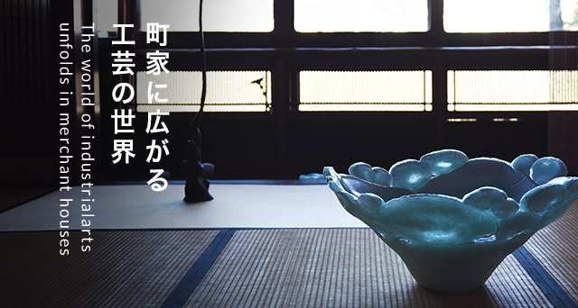
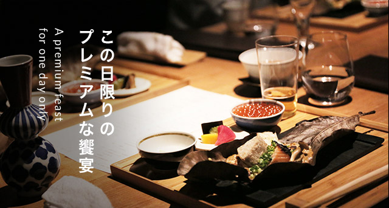
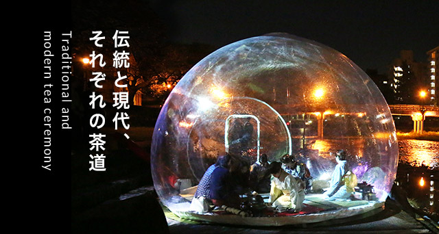
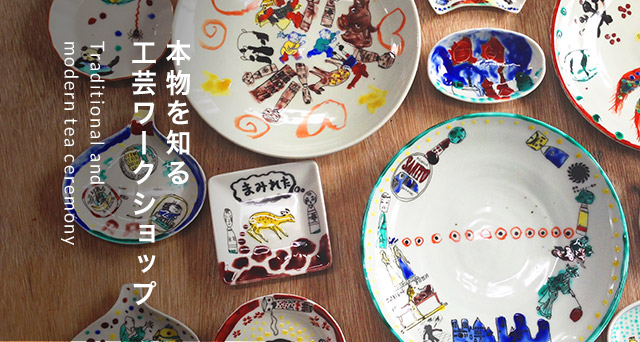
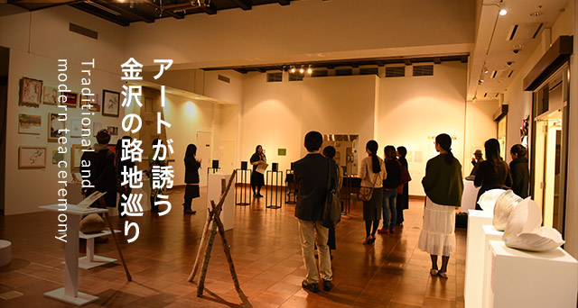
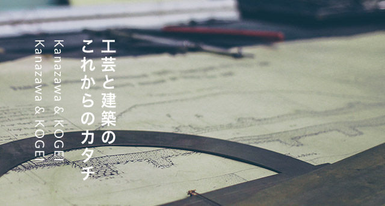

About
金沢２１世紀工芸祭とは
金沢21世紀工芸祭は、藩政期以来のものづくりが息づく石川県金沢市を舞台に開催する大型工芸フェスティバル。多様な展示にワークショップ、食イベントや茶会など、たくさんのプログラムが展開されます。いつにも増して工芸との接点がちりばめられた金沢で、ものづくりをとことん堪能してみませんか。
What is Kanazawa 21st KOGEI Festival
The Kanazawa 21 KOGEI Festival is a large-scale arts and crafts festival held in Kanazawa, Ishikawa Prefecture, a setting where craftsmanship traditions dating from the Edo period come to life. In addition to a wide range of exhibits, there will be held workshops, feast events, tea ceremony and other event programs. Thoroughly enjoy craftsmanship in Kanazawa, a city that will be studded even more than usual with places to experience arts and crafts.
Main contents
各イベントのご予約・詳細については8月中旬より、本サイトでご案内いたします。
For more information will be available In mid August.
-

工芸回廊Kogei kairo
町家が残る東山など、独自の空気感を持つ市内3エリアで行う展示イベント。通常の展示空間とは異なる場所と見せ方で、新たな工芸の魅力を発信。回遊することで街の多様性も感じられる。作家やギャラリストとの交流も。
This exhibition event is held in Higashiyama and two other areas in the city with their own unique character. The use of an atypical exhibition space lends a new kind of appeal to the artwork displayed. You can also experience the diversity of the city by visiting the different locations, and even interact with the artists and gallery owners.
-

趣膳食彩SHUZEN SHOKUSAI
金沢が誇る食文化と工芸の饗宴。金沢の街を深く知るディレクター陣が、工芸作家や料理、空間を独自の感性でコーディネート。この日のためだけに用意されたプレミアムな世界観を五感で味わう、一期一会の食事会。
A feast featuring the food culture and industrial arts Kanazawa takes pride in. The group of directors has deep understanding of the city of Kanazawa, and coordinates the works of industrial artists, food, and the space itself with a distinctive aesthetic. Enjoy the premium world created especially for this day with all five of your sense at this once in a lifetime dinner party.
-

金沢みらい茶会KANAZAWA MIRAI CHAKAI
「茶の湯」文化が根付く金沢ならではのイベント。茶席を「トラディショナル」と「コンテンポラリー」の2大テーマで実施。後者は建築家やクリエイターらが亭主となり、思い思いの解釈でおもてなしの心を表現する。
This is an event perfectly suited to Kanazawa, with its deep-rooted connections to tea ceremony culture. Featuring two major themes for tea ceremony seating, traditional and contemporary. The latter features architects and creative professionals as tea masters, and the hosts interpret the teachings in their own way to form a unique style of hospitality.
-

金沢みらい工芸部KANAZAWA MIRAI KOGEI-BU
子どもから大人まで、幅広い層が参加できるワークショップを実施する。石川の伝統工芸体験のほか、作家がどのようなコンセプトで作品をつくっているか、彼らの思いを追体験するアートワーク寄りのプログラムもある。
Visitors from a wide range of demographics from children to adults can all participate in this workshop. In addition to experiencing the traditional industrial arts of Ishikawa for yourself, this program also features vicarious experiences where creative professionals share the concepts they put into creating their work, giving participants a sense of closeness to artwork.
-

金沢アートスペースリンクKANAZAWA ART SPACE LINK
ギャラリーやアートスペースが連携する展示イベント。各スペースをそれぞれが目指す「美」の傾向により3グループに分類、グループごとに展示を行う。展示に併せてタブロイドも発行し、金沢の美術シーンを客観的に見つめる。
This is an exhibition event coordinated by galleries and art spaces. The different spaces are divided up into 3 groups based on the type of beauty they're aiming for, and exhibitions are carried out for each group. There's also a published tabloid to go along with the exhibitions that provides an objective view of the art scene in Kanazawa.
-

工芸建築Kanazawa & KOGEI
「建築を、ひとつの工芸作品として考える」。このテーマに、工芸作家や建築家、芸術家ら多彩なプレイヤーが応じる初の作品展。町家や武家屋敷など、独自の建築様式が形成された金沢から、新たな工芸の可能性を発信する。
This exhibition event is held in Higashiyama and two other areas in the city with their own unique character. The use of an atypical exhibition space lends a new kind of appeal to the artwork displayed. You can also experience the diversity of the city by visiting the different locations, and even interact with the artists and gallery owners.
各イベントのご予約・詳細については
7月下旬より、本サイトでご案内いたします。For more information
will be available in late July.
News
金沢21世紀工芸祭の最新情報は
公式FacebookとInstagramページで随時更新中。We will give you an update on the
festival on the official Facebook and Instagram pages.
主 催
金沢創造都市推進員会
金沢市
事務局
金沢21世紀工芸祭実行委員会
（株式会社ノエチカ内）
石川県金沢市下本多町六番丁40番地1 3階
Email : info@noetica.co.jp